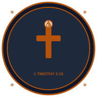

"The pillar and ground of the truth" (1 Timothy 3:15)
COG Metro Dumaguete
Pastor Jolly Forrosuelo Embalsado serves as the Senior Pastor and spiritual overseer of Church of God Metro Dumaguete. With a profound calling to the Negros Island region, he has dedicated his life to establishing a Christ-centered, Pentecostal community focused on authentic discipleship, strong family altars, and pastoral holiness.
Known for his passionate expository preaching style, he bridges deep scriptural patterns with practical daily living, modeling the conviction that a leader's home is their very first field of influence.
Si Pastor Jolly Forrosuelo Embalsado mao ang Senior Pastor ug espirituhanong magatutok sa Church of God Metro Dumaguete. Tungod sa iyang lawom nga tawag sa rehiyon sa Negros Island, iyang gigahin ang iyang kinabuhi sa pagtukod og komunidad nga nasentro kang Kristo, nagpabili sa tinuoray nga pagkadisipulo, altar sa pamilya, ug balaang pagkinabuhi.
Nailhan siya sa iyang madasigon nga estilo sa pagwali, diin iyang gisumpay ang kamatuoran sa Kasulatan ngadto sa adlaw-adlaw na pagkinabuhi, ug nagpamatood nga ang panimalay mao ang unang natad sa ministeryo.
We believe the entire Bible is the inspired and infallible Word of God, serving as our final supreme authority for lifestyle and doctrine.
Nagatuo kami nga ang tibuok Biblia nagagikan sa inspirasyon sa Dios ug mao ang bugtong sumbanan sa pagkinabuhi ug doktrina.
Belief in one eternal God existing in three co-equal persons: the Father, the Son (Jesus Christ), and the Holy Spirit.
Nagatuo sa usa ka Dios nga nagalungtad sa tulo ka Persona: ang Amahan, ang Anak, ug ang Espiritu Santo.
Salvation is obtained entirely by grace through personal repentance and faith in the precious shed blood of Jesus Christ.
Ang kaluwasan madawat lamang pinaagi sa grasya tungod sa paghinulsol ug pagtoo sa dugo ni Hesus nga giula sa krus.
An empowerment subsequent to salvation, traditionally accompanied by the scriptural physical evidence of speaking in other tongues.
Gahom nga madawat human sa kaluwasan, nga gina-ubanan sa timaan sa pagpamulong sa laing pinulongan sumala sa Kasulatan.
The progressive work of the Holy Spirit in the believer's life, separating us from worldly conformity and progressively making us more like Christ.
Ang patuloy na gawain sa Espiritu Santo sa buhay ng nagtotoo, paghiwalay sa atin gikan sa kalibutan ug ginagawang katulad ni Kristo.
Theme: Salvation is a complete gift from God (Ephesians 2:8-9). We cannot earn it through human rituals, good works, or religious activities. It requires turning away from sin and surrendering completely to Christ.
Tema: Ang kaluwasan usa ka gasa sa Dios (Efeso 2:8-9). Dili kini makuha pinaagi sa relihiyon o maayong buhat. Nagkinahanglan kini og paghinulsol ug hingpit na pagtugyan sa kinabuhi kang Kristo.
Theme: The Bible is our absolute foundation and final authority (2 Timothy 3:16-17). Every belief and practice must align with Scripture. Personal feelings, traditions, or cultural norms cannot override biblical truth.
Tema: Ang Biblia mao ang ating pundasyon at bugtong sumbatan (2 Timoteo 3:16-17). Ang bawat paniniwala at gawi dapat sumunod sa Kasulatan. Ang mga damdaman, tradisyon, o kultura dili makasulong sa kamatuoran ng Dios.
Theme: Baptism in the Holy Spirit is a distinct, empowering experience available to all believers (Acts 2:38-39). The biblical sign of this baptism is speaking in other tongues as the Spirit gives utterance (Acts 2:4). This is not ecstasy or emotion, but obedience to the Holy Spirit's control.
Tema: Ang Baptismo sa Espiritu Santo mayroon kalusugan na karanasan para sa lahat ng nagtotoo (Mga Gawain 2:38-39). Ang timaan ay ang pagpamulong sa laing pinulongan gaya ng binibigyan ng salita ng Espiritu Santo (Mga Gawain 2:4). Hindi ito sigla man lang kundi obediensya sa Espiritu Santo.
Theme: Holiness is not optional for disciples of Christ; it is the calling of every believer (1 Peter 1:15-16). True Christianity transforms behavior, relationships, and priorities. We are called to separate ourselves from worldly conformity and live as living sacrifices to God.
Tema: Ang pagbalaan dili optional; ito ang tawag sa bawat nagtotoo (1 Pedro 1:15-16). Ang tunay na Kristiyanismo nagbabago ng gawi, relasyon, at priyoridad. Tayo ay tawag na maghiwalay sa mundo at mamuhay bilang isang bukas na sakripisyo sa Dios.
Have questions? Want to know more about our church community? Fill out the form and we'll be in touch shortly. Whether you're seeking salvation, want to join our discipleship classes, or simply need prayer support, we're here for you.
May katanungan? Nais mo bang malaman ang higit pa tungkol sa aming komunidad? Punan ang form at makikipag-ugnayan kami sa iyo. Kung naghahanap ka ng kaluwasan, nais sumali sa klase, o kailangan ng prayar, nandito kami.